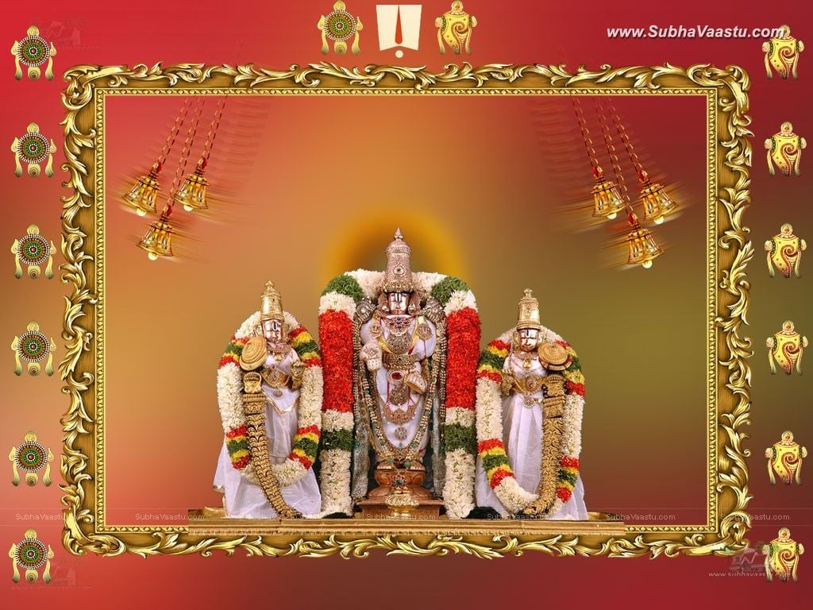

Tirumala Yathra Guide
TTD

TTD means Tirumala Tirupati Devasthanams.TTD is an religious organization.There is a chairman with board members.currently the chairman is who is the niece of YS Jagan(CM of AP). TTD was established in 1932 as a result of the TTD Act of 1932. According to the act administration of the temple was vested in a committee of seven members and overseen by a paid commissioner appointed by the Madras Government. Advising the committee were two advisory councils – one composed of priests and temple administrators to aid the committee with the operations of the Tirumala temple, and another composed of farmers for advice on Tirumala's land and estate transactions.
Services offered by TTD
- Annaprasadam:The food offerings as "Annaprasadams" are being undertaken by TTD in a massive way in the Matrusri Tarigonda Vengamamba Annaprasadam Complex, donated by Matrsuri Tarigonda Ananta Koti Raju at Tirumala, in all the waiting queue lines and compartments of Vaikuntam Queue Complex I and II, footpath routes etc.In Tirupati and Tiruchanur also the distribution of free food as "Annaprasadam" is being made to not less than 15,000 devotees.
- Education:There is an public university named SRI VENKATESWARA UNIVERSITY founded by TTD to serve with education to all the students.There is Vedic university,Arts and Science,Engineering,Medical,Law and more.
- Hospital:It is home for cattle received as a donation (Godanam). It was established in the year 1956 by TTD and later renamed to S.V. Gosamrakshana Shala during 2004. It is located at Chandragiri Road, Tirupati. It is maintained by Tirumala Tirupati Devasthanams based on the funds received under Sri Venkateswara Gosamrakshana Shala Trust. Activities of the trust include providing a good environment, management, and food to the cattle. The milk and its products produced here are used by TTD for daily rituals at Sri Venkateswara Temple and other TTD temples.
- Free Bus Services are also offered.